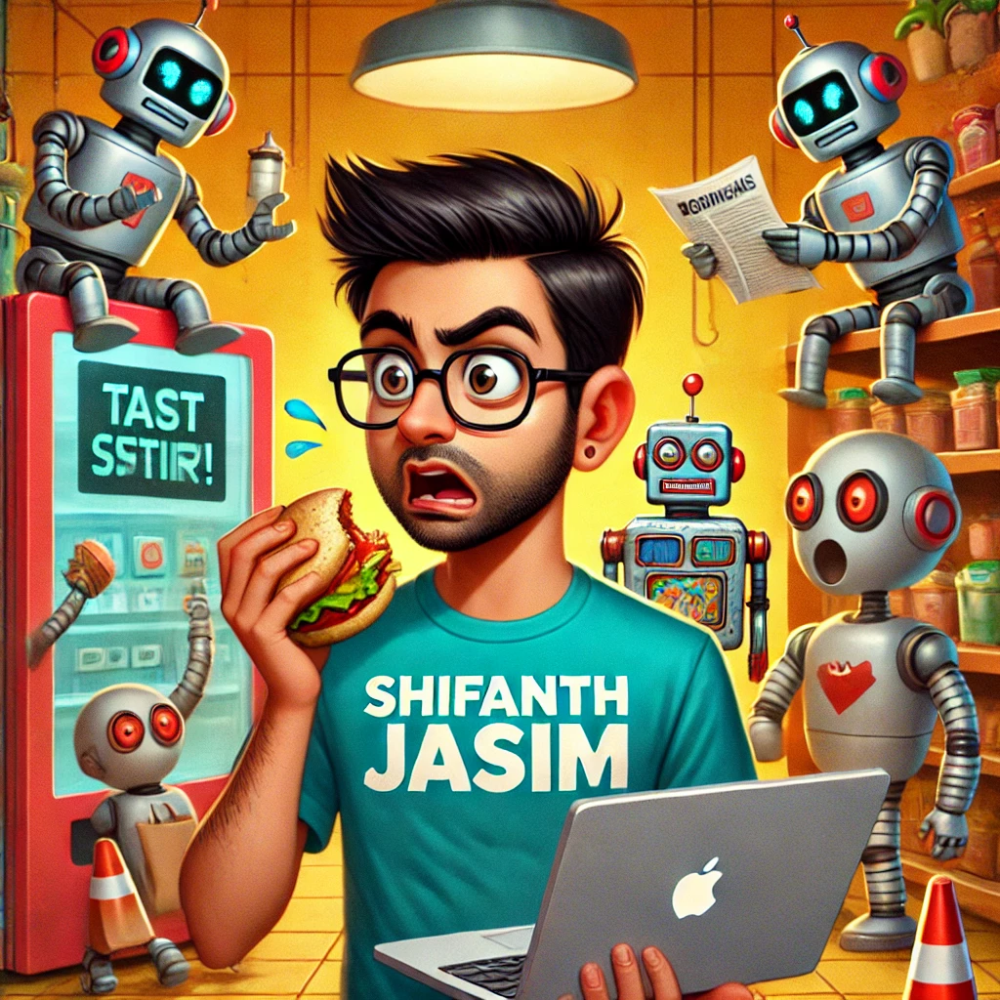

Welcome to the whimsical world of artificial intelligence (AI), where machines are learning faster than your cousin learns to steal your fries at a family gathering! In this post, we’ll explore the basics of AI—what it is, how it works, and why you might want to teach your toaster to make you breakfast.
What is Artificial Intelligence?
At its core, artificial intelligence is like giving brains to your favorite gadgets. It’s the science of creating machines that can perform tasks that typically require human intelligence. This includes things like understanding natural language, recognizing images, and even learning from experience. Think of AI as the brain behind everything from Siri’s sass to the uncanny ability of Netflix to recommend movies you didn’t know you needed in your life.
Types of AI: A Quick Rundown
- Narrow AI (Weak AI): This is AI that’s designed to perform a specific task. It’s like that friend who only knows one dance move—great at it, but don’t expect them to freestyle. Examples include voice assistants like Alexa and Google Assistant. They can answer questions and control your smart home but won’t help you with your existential crises.
- General AI (Strong AI): This is the dream of AI that can perform any intellectual task a human can do. Think of it as the ultimate multitasker—cooking, cleaning, and solving complex math problems all while giving you unsolicited life advice. We’re not there yet, but keep your fingers crossed and your robot vacuum charged!
- Superintelligent AI: This is where things get a bit sci-fi. Imagine a machine that surpasses human intelligence in all aspects. It’s like having a super-smart pet that can do your taxes and explain quantum physics, but we’re still figuring out how to get our regular pets to stop knocking over the trash can.
How Does AI Work?
AI uses algorithms, which are like recipes for intelligence. These algorithms process data, learn from it, and make decisions. It’s a bit like teaching a toddler to ride a bike: at first, they wobble and fall, but eventually, they get the hang of it and start zooming past you with a gleeful giggle.
- Machine Learning: This is a subset of AI that allows machines to learn from data. The more data you feed it, the smarter it gets. Just remember, feeding it too much data can lead to information overload, much like what happens when you let your friend binge-watch reality TV.
- Deep Learning: This is like machine learning but on steroids. It uses neural networks to analyze data, mimicking the way our brains work. Picture a giant spaghetti mess of neurons trying to figure out if that blob in the photo is a cat or a very confused potato.
Why Should You Care?
AI is everywhere! It powers the recommendations on your favorite streaming services, enhances your selfies, and even helps doctors diagnose illnesses. In the near future, your coffee maker might even be able to predict how much caffeine you need based on how cranky you are in the morning. Talk about personalized service!
AI: The Overachieving Friend Who Knows Too Much!
Artificial intelligence may seem daunting, but it’s really just a collection of algorithms trying to make our lives easier (and sometimes a bit sillier). So the next time you ask Siri for directions or watch your robot vacuum bump into the wall, remember: AI is here to stay, and it’s just trying to figure out how to fit in—snacks and all!